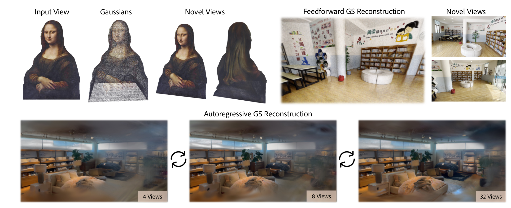
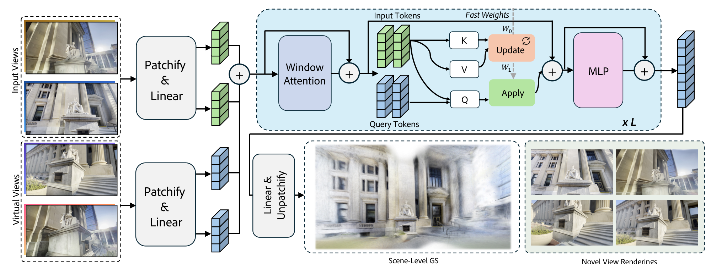
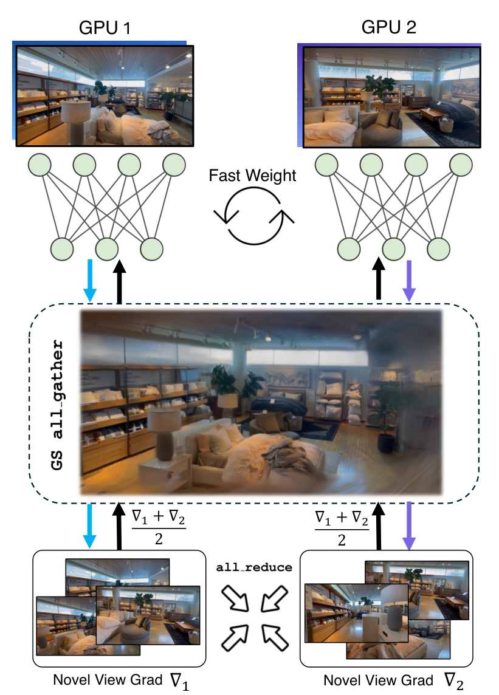
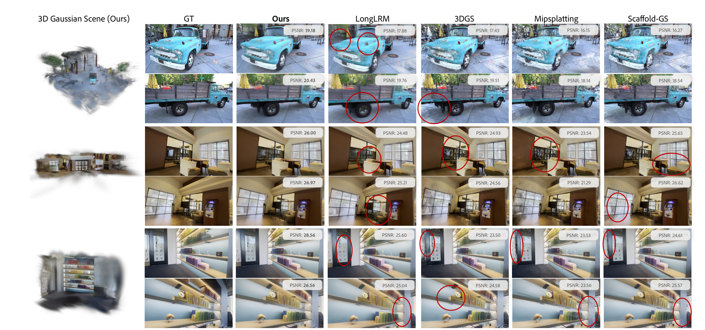
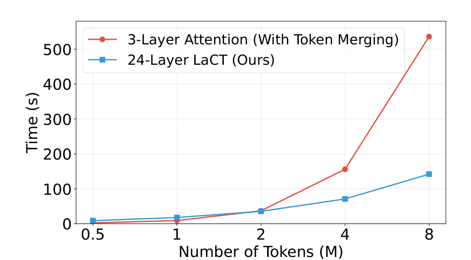

tttLRM 深读：把“记忆”做成一个会被梯度更新的小网络，怎样撑起长上下文、流式的 3D 重建？
导读。tttLRM 真正要回答的问题不是“能不能从多视角重建 3D”，而是：当输入多到 64 个高清视角、还要支持流式输入时，注意力的 $O(N^2)$ 就撑不住了——那把“跨视角记忆”换成什么，才能既线性、又因果、又足够有表达力？它的答案来自 Test-Time Training（TTT）：让序列模型的“记忆”不再是注意力的 KV cache，而是一个会在推理时被梯度更新的小网络的权重（fast weights）；输入视角去“更新”它、虚拟视角去“查询”它，解出 3DGS。
{kind=link}

1. 核心问题：长上下文 3D 重建为什么卡在注意力上？
从 $N$ 个有位姿的视角重建 3D，本质是把跨视角的信息聚合成一个场景表示。最自然的做法是让所有视角 token 互相注意——但注意力是 $O(N^2)$。苏剑林有一个精准的视角：注意力其实是一个“平方复杂度的 RNN”，每读一个新 token 就把整段历史重读一遍 [archives/10017]。视角一多（64 个高清视角）就吃不消，而且它不是因果的，没法做流式/自回归。
问：那换成线性注意力 / 线性 RNN 不就线性了吗？
引导：线性注意力的“状态”是一个固定大小的矩阵，按一条写死的线性规则更新——容量和表达力都受限。
答：线性是够了，但固定向量/矩阵状态是一种很弱的压缩：长上下文里的复杂 3D 场景塞进一个线性更新的状态，容易丢信息。问题变成：能不能要一个既线性、又更有表达力的记忆？
Takeaway：tttLRM 不是在“减少视角”，而是在为长上下文 3D 重新挑选一种“记忆”的数据结构。
2. 贡献拆解：作者明确提出了什么？
作者明确提出的贡献：第一，把 Test-Time Training（TTT/LaCT）层引入大重建模型，得到线性复杂度、可扩展到长上下文的前馈 3D 重建；第二，重新设计 fast-weight 的更新与查询，使其成为一个可被虚拟视角查询、并解码出显式 3D（3DGS、triplane NeRF 等）的“潜在 3D memory”，并支持自回归流式重建；第三，引入序列并行等训练手段，把 TTT 的内层优化在大规模下训起来。
读者能进一步推断的是：这套“记忆=会被 GD 更新的小网络”的思路是表示无关的——论文也展示它能解成 triplane NeRF 而不止 3DGS，暗示 TTT 作为“通用 3D 记忆”有更广的适用面。
3. 数据集与任务：多视角前馈 3D 重建
任务是前馈（一次前向，无逐场景优化）的多视角到 3DGS 重建：输入一组有位姿的图像，输出场景级高斯。训练用从 8 到 64 视角的输入；评测在 DL3DV-140 等多视角基准上与 GS-LRM、LongLRM、3DGS、MipSplatting、ScaffoldGS 等对比。高分辨率单图到 3D 则借助一个多视角生成器接入。
4. Pipeline：输入视角写记忆、虚拟视角读记忆
{kind=link}

问：为什么把输入和查询分成“更新 W”与“只 Apply”两条路？
答：输入视角是“证据”，要写进场景记忆 $W$（式 2）；虚拟视角是“想从哪个角度看”，只需读这份记忆、不该改写它（式 4）。这条读写分离正是“先把所有视角压进 $W$、再按需查询任意视角”的关键，也是线性复杂度与流式能力的来源。
Takeaway：把“跨视角融合”变成“写记忆”，把“渲染任意视角”变成“读记忆”。
5. 模型与方法：TTT 把记忆做成一个会被训练的小网络
先看 TTT 的本体。标准注意力把 token 投影成 $q,k,v$，靠点积让每个 token 注意所有其它 token，复杂度平方。TTT 改成：学一组 fast weights $W$，把输入 token 的 $(k,v)$ 当训练数据，在推理时用一步梯度下降去拟合，再用 $q$ 读出：
这一步到底在干嘛（为什么比线性注意力更有表达力）
苏剑林对 TTT 的概括一针见血：设计一个模型 $v=f(S_t;k)$，用这些 $(k,v)$ 对去“训练”它，训练完它就某种意义上“背下”了这些 $(k,v)$——这是对 KV cache 的一次学习式压缩 [archives/11320]。线性注意力只是其中 $f$ 取线性、更新取一条写死规则的特例；TTT 允许 $f$ 是非线性小网络、更新是真正的 GD，因此对长上下文的压缩更不容易丢信息。代价见下方“承重假设”。LaCT（Large Chunk TTT）则把更新改成大 chunk 一起算梯度，提升 GPU 利用率、撑住长序列。
tttLRM 把图像 + ray embedding 切 patch、token 化后，送进 LaCT block。一层的计算可写成（省略前馈层）：
另设一组虚拟视角 token（GS 重建里就是虚拟视角图）作为查询，只 Apply、不更新 $W$，再由线性解码器解出每个 patch 的高斯参数（颜色、scale、旋转、不透明度，位置另解）：
承重假设与代价
(1) 容量换无损：注意力的 KV cache 是无损但无界的；fast weights 是固定预算的有损压缩——所以短序列时全注意力可能更准/相当，tttLRM 的优势在长上下文。(2) 内层 GD 要可训：把“记忆=被 GD 更新的网络”塞进大模型，必须把这步内层优化也一起学好（论文用序列并行 + Muon 优化器更新 fast weights），否则记忆压不好。(3) 3D 化是重设计：原始 TTT 面向 1D 序列；让 $W$ 成为可被虚拟视角查询、解码出 3DGS 的“3D 记忆”，并支持自回归更新，是本文的核心改造，而非直接套用。
问：为什么这套天然支持自回归 / 流式重建？
答：因为 Update 是增量的：新视角来了就再对 $W$ 做一步更新，不必重读全部历史（这正是它区别于“平方复杂度 RNN”式注意力的地方 [archives/10017]）。于是可以边接收视角边精化场景记忆，随时 Apply 出当前估计。
Takeaway：线性来自“增量写记忆”，表达力来自“记忆是一个被 GD 训练的网络”，流式来自二者的结合。
6. 训练细节与算力账本
| 项目 | 论文披露 | 解释 | 缺失信息 |
|---|---|---|---|
| 核心层 | LaCT（Large Chunk TTT）block + 窗口注意力 | 线性复杂度的跨视角记忆 + 视角内局部建模 | 层数/宽度等完整规格见正文 |
| fast-weight 更新 | 用 Muon 优化器对 $W$ 做 chunk 更新 | 提升内层 GD 的稳定与效率 | 学习率 $\eta$、chunk 大小细节部分在正文/补充 |
| 输入规模 | 训练视角数 8–64；分辨率最高 1024px | 支撑长上下文与高分辨率主张 | 完整训练步数/时长/硬件论文未在正文完整给出 |
| 训练手段 | 序列并行；可选 NVS 预训练 | 把内层优化在大规模下训起来 | — |
{kind=link}

算力说明
正文未完整给出训练小时数与硬件规模。因此不做 GPU-hours 估算；TTT 的特殊之处在于“训练里嵌了一层内层 GD”，复现成本应把外层训练与内层 fast-weight 更新分开理解。
7. 实验结果：长上下文下，又快又好吗？
两条独立轴一起看：质量 + 速度。先和最强前馈基线 GS-LRM 在 GSO 上同台——同样输入，tttLRM 在 PSNR 与延迟上同时更好，且差距随视角数变大。
| 分辨率 · 视角 | 方法 | 时间↓ | PSNR↑ | SSIM↑ | LPIPS↓ |
|---|---|---|---|---|---|
| 256² · 8 | GS-LRM | 0.1s | 31.55 | 0.964 | 0.028 |
| 256² · 8 | Ours | 0.1s | 33.14 | 0.972 | 0.024 |
| 512² · 16 | GS-LRM | 2.5s | 33.55 | 0.976 | 0.023 |
| 512² · 16 | Ours（10 V.） | 0.8s | 34.67 | 0.978 | 0.022 |
| 512² · 24 | GS-LRM | 5.5s | 33.26 | 0.976 | 0.022 |
| 512² · 24 | Ours（10 V.） | 1.1s | 34.80 | 0.979 | 0.022 |
读数：512²/24 视角下 tttLRM 是 34.80 dB / 1.1 秒，GS-LRM 是 33.26 dB / 5.5 秒——高 1.5 dB 还快约 5×。更说明问题的是趋势：GS-LRM 从 16→24 视角反而从 33.55 掉到 33.26，而 tttLRM 仍在涨（34.67→34.80）——“线性记忆能吃下更长上下文”不掉点。
{kind=link}

再和场景级长上下文基线比。在 DL3DV-140 / Tanks&Temples 上，对手是逐场景优化的 3DGS/Mip/Scaffold（要 13–16 分钟）与前馈 Long-LRM（每个视角数训一个单独模型）；tttLRM 是同一个模型覆盖所有视角数。
| 视角 | 方法 | 时间↓ | DL3DV↑ | T&T↑ |
|---|---|---|---|---|
| 16 | Scaffold-GS（优化） | 16 min | 22.13 | 17.02 |
| 16 | Long-LRM(16v) | 0.4s | 22.66 | 17.51 |
| 16 | Ours | 3.6s | 23.60 | 18.15 |
| 32 | Scaffold-GS（优化） | 16 min | 24.77 | 18.41 |
| 32 | Long-LRM(32v)+optim | 12s | 24.99 | 18.69 |
| 32 | Ours | 7.2s | 25.07 | 19.22 |
| 64 | Scaffold-GS（优化） | 16 min | 27.07 | 20.96 |
| 64 | Long-LRM(64v) | 3.7s | 24.63 | 19.11 |
| 64 | Ours | 14.8s | 25.95 | 20.31 |
读数：32 视角处 tttLRM 25.07 dB 超过逐场景优化的 Scaffold-GS（24.77，慢约 130×）、甚至 Long-LRM 再加 12 秒优化（24.99），且全程一个模型。到 64 视角，优化法靠分钟级迭代反超（27.07），但 tttLRM 仍以 14.8 秒拿到 25.95、并一致优于同为前馈的 Long-LRM（24.63）。一句话：前馈方法里最强，且把“逼近优化法质量”的代价从分钟压到秒。
{kind=link}

问：这些提升是 TTT 本身，还是只是模型更大/数据更多？
答：消融把因素拆开（见下节）——把全量重建换成省算力的渐进合并会掉 2.1 dB（误差累积）；去掉 NVS 预训练初始化最终质量也更低。这些都说明增益来自 TTT 记忆与训练设计，而非单纯堆规模；而且与 Long-LRM 用一个模型对多个单独模型的对比，更排除了“专门训练”的混淆。
Takeaway：主张成立的边界是“长上下文、前馈 3D 重建”，证据覆盖速度（表 C 快 5×、表 D 秒级）与质量（一致优于 GS-LRM/Long-LRM）两面。
8. 消融：哪些设计真的必要？
(1) 增量 vs 全量：误差累积是真的。把“一次性全量重建”换成更省的 “Predict & Merge”（复用上一步高斯、只补新视角），在 32 视角 / 1K 步微调下：
| 策略 | PSNR↑ | SSIM↑ | LPIPS↓ |
|---|---|---|---|
| Predict & Merge（省算力） | 21.50 | 0.891 | 0.318 |
| Ours（全量） | 23.63 | 0.904 | 0.259 |
合并版省算力却掉了 2.1 dB——它无法纠正已合并高斯里的累积误差。这正是第 5 节“fast weights 是有损压缩、增量更新会累积损失”的实测对应。
| 3D 表示 | 初始化 | PSNR↑ | SSIM↑ | LPIPS↓ |
|---|---|---|---|---|
| GS | w/o Pretrain | 32.77 | 0.969 | 0.026 |
| GS | w Pretrain | 33.14 | 0.972 | 0.024 |
| Triplane | w/o Pretrain | 26.40 | 0.903 | 0.093 |
| Triplane | w Pretrain | 27.87 | 0.925 | 0.075 |
(2) 预训练迁移（NVS → 重建）。从 LVSM 新视角合成预训练初始化，不只加快收敛，最终质量也更高：GS 32.77→33.14；triplane 更明显，26.40→27.87（+1.5 dB）。说明 NVS 先验是 3D 重建的有效归纳偏置，且能跨 3D 表示迁移。
(3) 优化器与正则。用 Muon 更新 fast weights 比基线略好（PSNR 20.44→20.68）；更关键的是加 depth + opacity 正则，把“几乎不透明的高斯占比”从 96%→47%——直接改善了表示的稀疏性与可用性，而非只刷分。
问：消融与机制是否自洽？
答：自洽。表 E“渐进合并掉 2.1 dB”正对应第 5 节“fast weights 有损、增量累积误差”；表 F“预训练 +1.5 dB”说明记忆的好坏也取决于初始化的先验；Muon 与正则则保证内层 GD 稳定。理论预测的失败模式（增量累积）与有效设计（预训练、稳定优化）都被数字证实。
Takeaway：关键不是“能不能增量”，而是“怎样更新记忆才不过度累积误差”——全量重建（+2.1 dB）、NVS 预训练（+1.5 dB）、Muon + 正则（opaque 96%→47%）三者缺一不可。
9. 局限与复现门槛：什么时候要谨慎？
| 边界 | 论文/方法信息 | 读者应如何理解 |
|---|---|---|
| 有损记忆 | fast weights 是固定预算压缩 | 短序列未必胜过全注意力；优势集中在长上下文 |
| 误差累积 | 增量/渐进更新会累积误差（表 4） | 流式越长，越需要控制每步压缩损失 |
| 内层可训性 | 需把内层 GD（fast-weight 更新）训好 | 序列并行 + Muon 等是必要工程，复现门槛在此 |
| 依赖位姿 | 输入为“有位姿”的多视角 | 位姿误差会直接污染写入的场景记忆 |
| 评测范围 | 主评测为 DL3DV-140 等多视角基准 | 极端无界/动态场景仍需额外验证 |
问：这篇论文最容易被过度宣传成什么？
答：容易被说成“TTT 全面取代注意力做 3D”。更严谨的说法是：在长上下文、前馈 3D 重建里，把记忆换成被 GD 更新的 fast weights，能在保持质量的同时把复杂度从平方降到线性，并解锁自回归流式重建。
Takeaway：强项是“线性 + 表达力 + 流式”；边界是有损记忆、误差累积与内层训练成本。
结语：几点学术判断
一句话总结：tttLRM 的价值在于把 3D 重建的“跨视角记忆”从注意力的 KV cache 换成一个会被梯度更新的小网络（fast weights），用线性的代价换来长上下文与流式能力。
- 注意力是平方复杂度的“重读历史”；长上下文 3D 需要增量、固定预算的记忆。
- TTT 把记忆做成被 GD 训练的网络——比线性注意力的固定状态更有表达力，是对 KV cache 的学习式压缩。
- 代价是有损与误差累积：短序列未必赢全注意力，长流式要控好每步压缩损失；内层 GD 的可训性是复现关键。
资料来源与图像说明
- Chen Wang, Hao Tan, Wang Yifan, Zhiqin Chen, Yuheng Liu, Kalyan Sunkavalli, Sai Bi, Lingjie Liu, Yiwei Hu. tttLRM: Test-Time Training for Long Context and Autoregressive 3D Reconstruction. CVPR 2026 / arXiv:2602.20160（Adobe Research, UPenn, UCI）。
- 本文公式、表格与实验数字以 arXiv PDF 为准；“注意力=平方复杂度 RNN”与“TTT 用 $(k,v)$ 对训练小网络以压缩 KV cache”的一般视角参考苏剑林 [archives/10017]、[archives/11320]，非本文独有。
- 图像说明：所有正文图为本地 PNG，来自 arXiv PDF 的高 DPI 页面裁切（图 1/2/3），路径位于
assets/figures/tttlrm/。